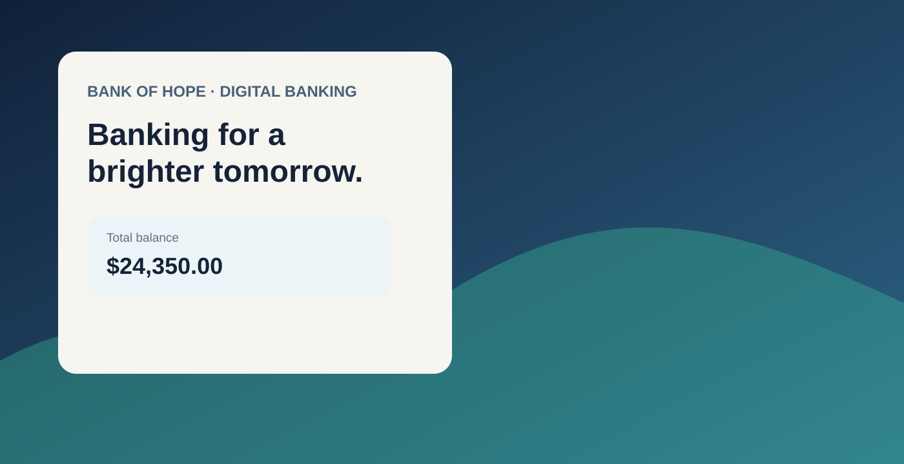

Make an enterprise journey feel understandable without oversimplifying it.
Digital banking asks people to make financial choices, share sensitive information and recover from errors while maintaining trust. In that environment, UX cannot operate as a final visual layer. The experience has to connect customer behavior, business goals, risk, technology and the realities of delivery.
I worked across digital-transformation experiences with a focus on making those relationships visible and actionable for the team.
My role: lead the experience conversation
I approached the work as a UX leadership problem: establish a shared view of the customer journey, identify where friction or uncertainty affects behavior, and give product and delivery partners a framework for deciding what to change.
That meant connecting UX strategy, interaction design, behavioral data, personalization and reusable UI patterns rather than treating each screen as an isolated design request.
Strategy: make the decision system visible
Rather than asking the team to debate individual screens, I focused conversations on journey-level friction and the trade-offs behind it. Research signals, behavioral data and stakeholder priorities were brought together to guide information architecture, progressive disclosure, recovery patterns and interaction priorities.
Use research and behavioral signals to identify where customers hesitate, abandon or need more confidence.
Make customer needs, business priorities, risk and technical constraints part of the same design conversation.
Translate decisions into reusable interaction patterns that teams can implement consistently across the experience.
Design system as an operating tool
The modular system supported enterprise applications and multiple digital channels. Its value was not visual consistency alone. Shared patterns gave designers and developers a common interaction language, reduced avoidable interpretation during delivery, and made future product decisions faster and more coherent.
For leadership, a design system becomes most valuable when it changes how teams work—not simply how components look.
Leadership impact
The portfolio context records improvements in account-opening time, conversion, task completion and feature adoption without publishing the redacted percentages. The larger leadership outcome was positioning design as a partner in business metrics, research and cross-functional decision-making rather than a final UI layer.